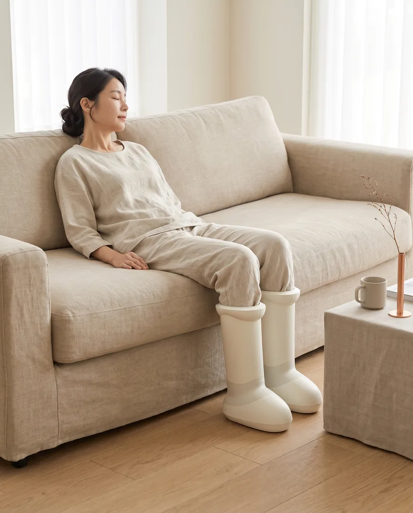
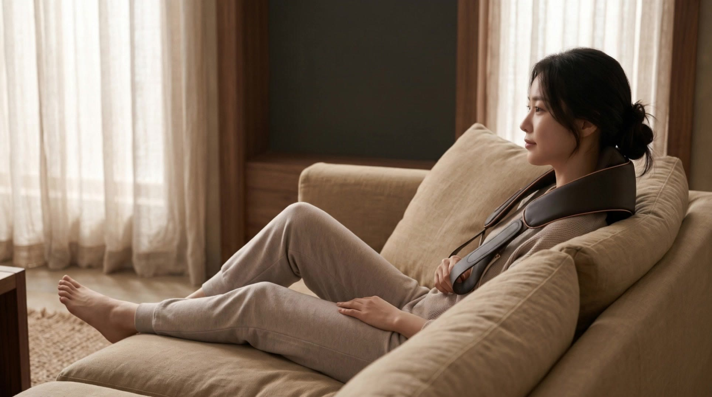
Home, Sheltered
집이 쉼터가 됩니다.
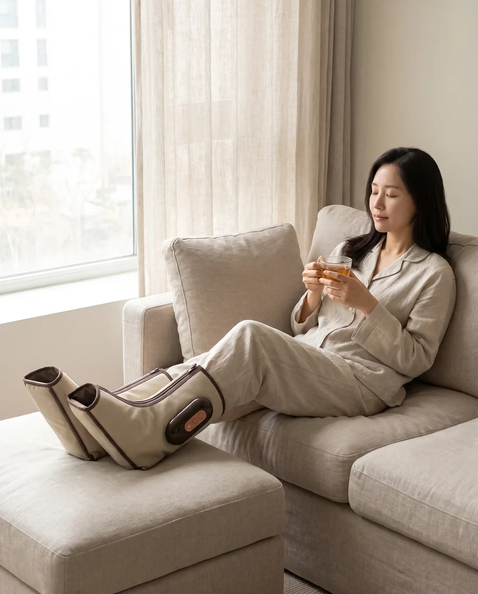
Brise · WindowHome, Sheltered
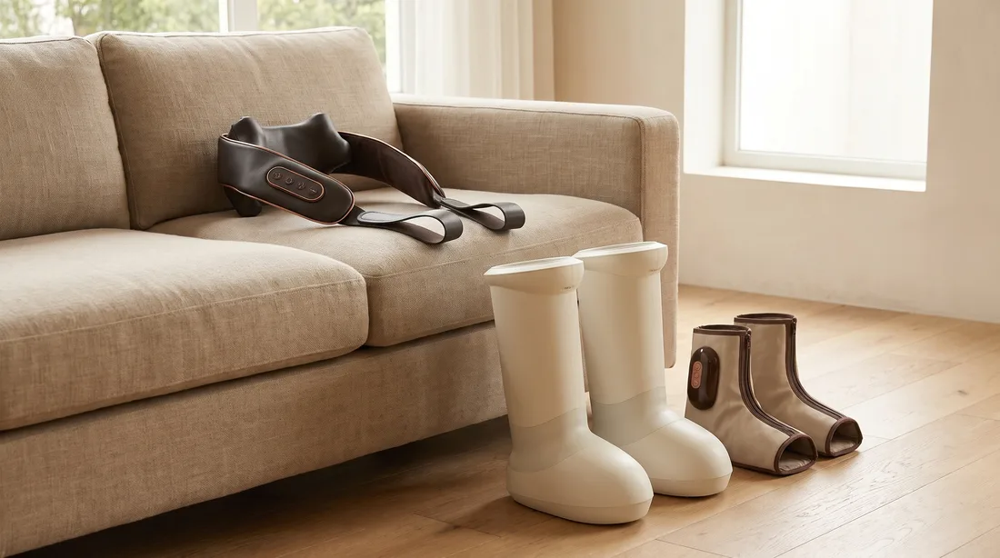
목에서 발끝까지, 하루를 마친 자리에 온기를 둡니다.
아브리는 프랑스어로 비바람을 피하는 자리입니다.
밖이 시끄러운 날에도 집만큼은 조용한 쉼터이길 바랐습니다.
An Evening, In Order
저녁에도 순서가 있습니다.
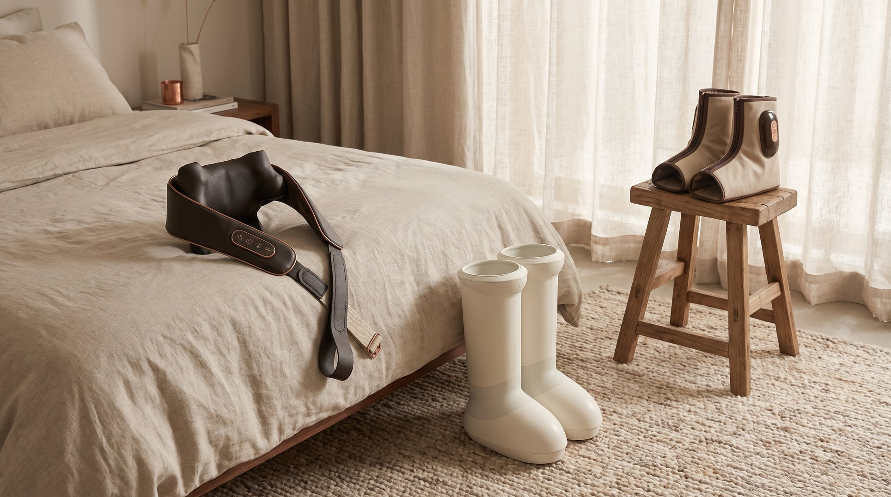
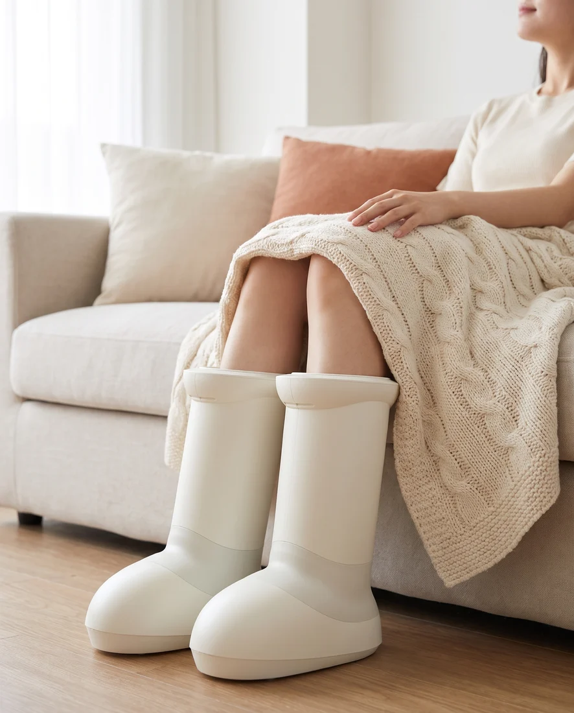
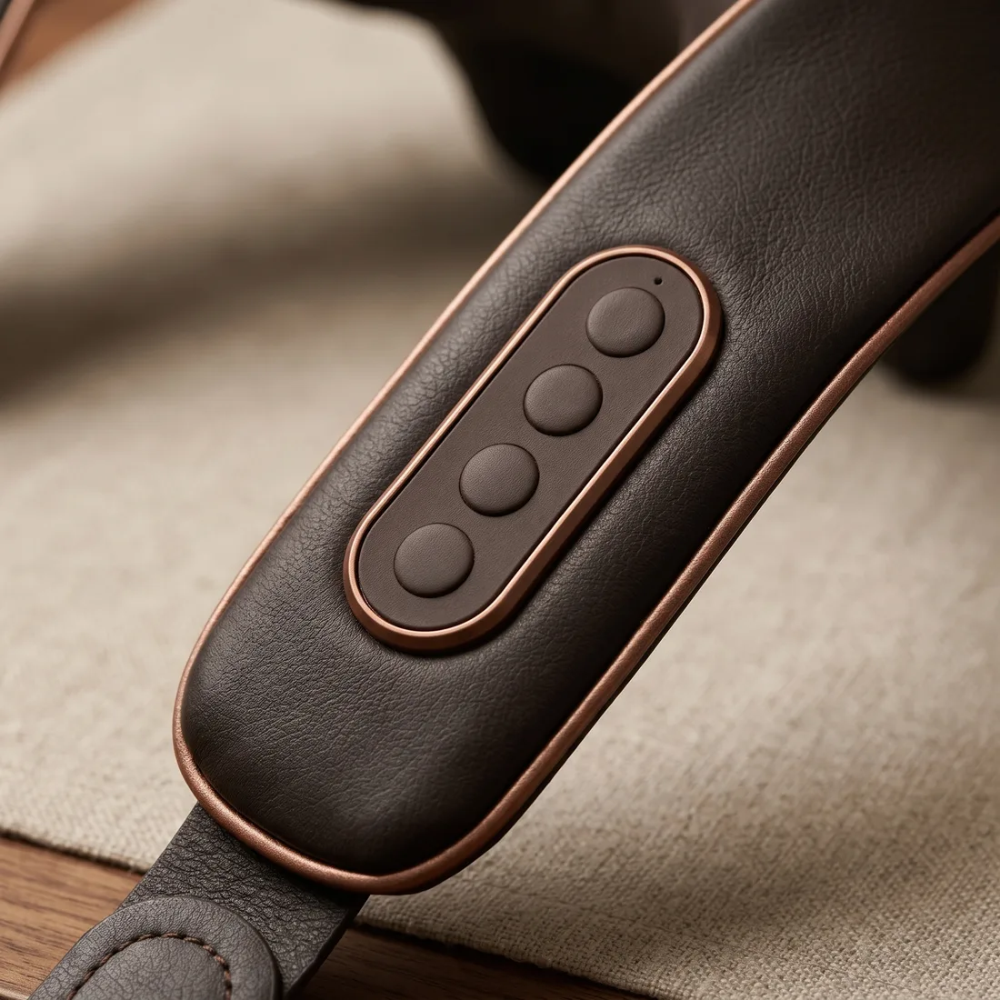
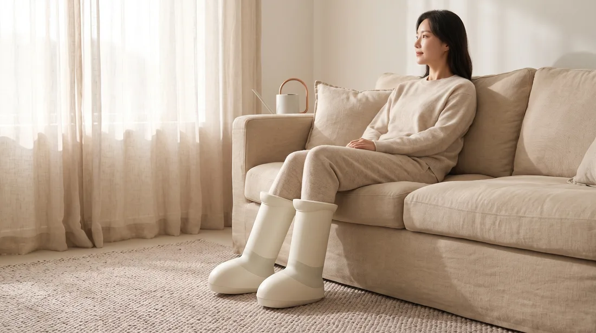
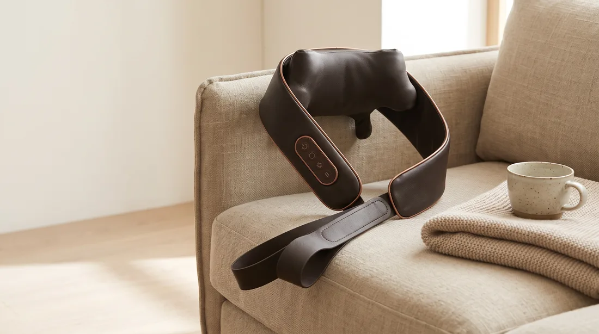
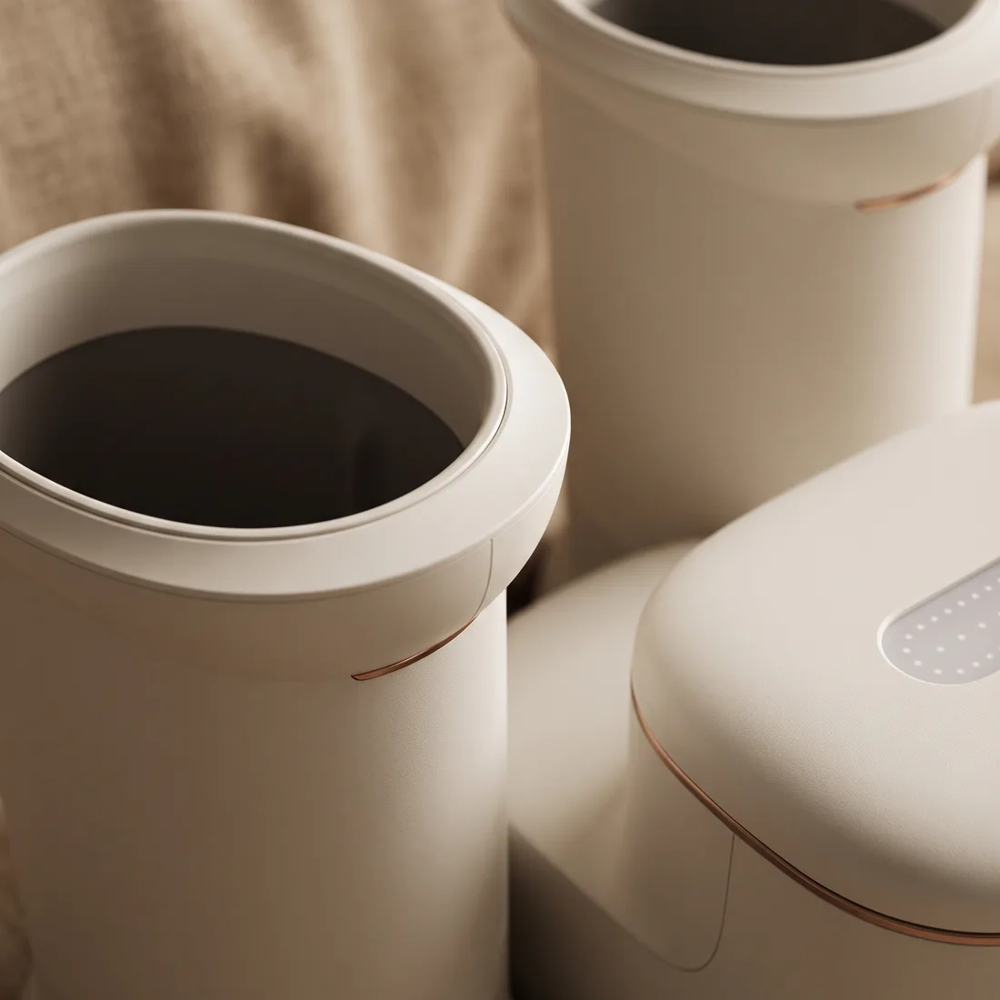
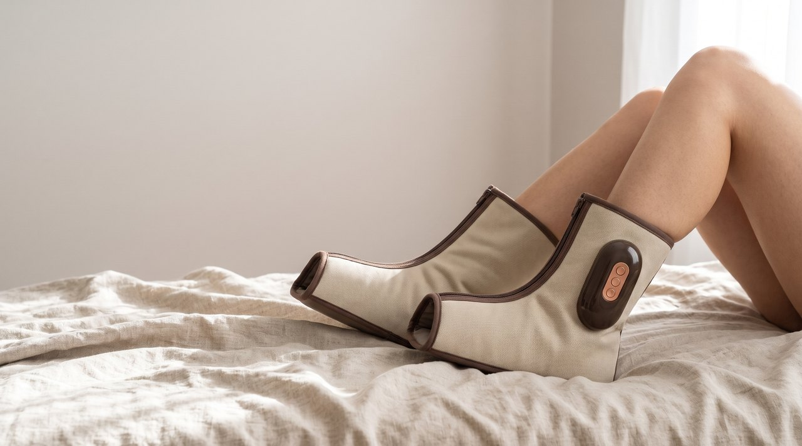
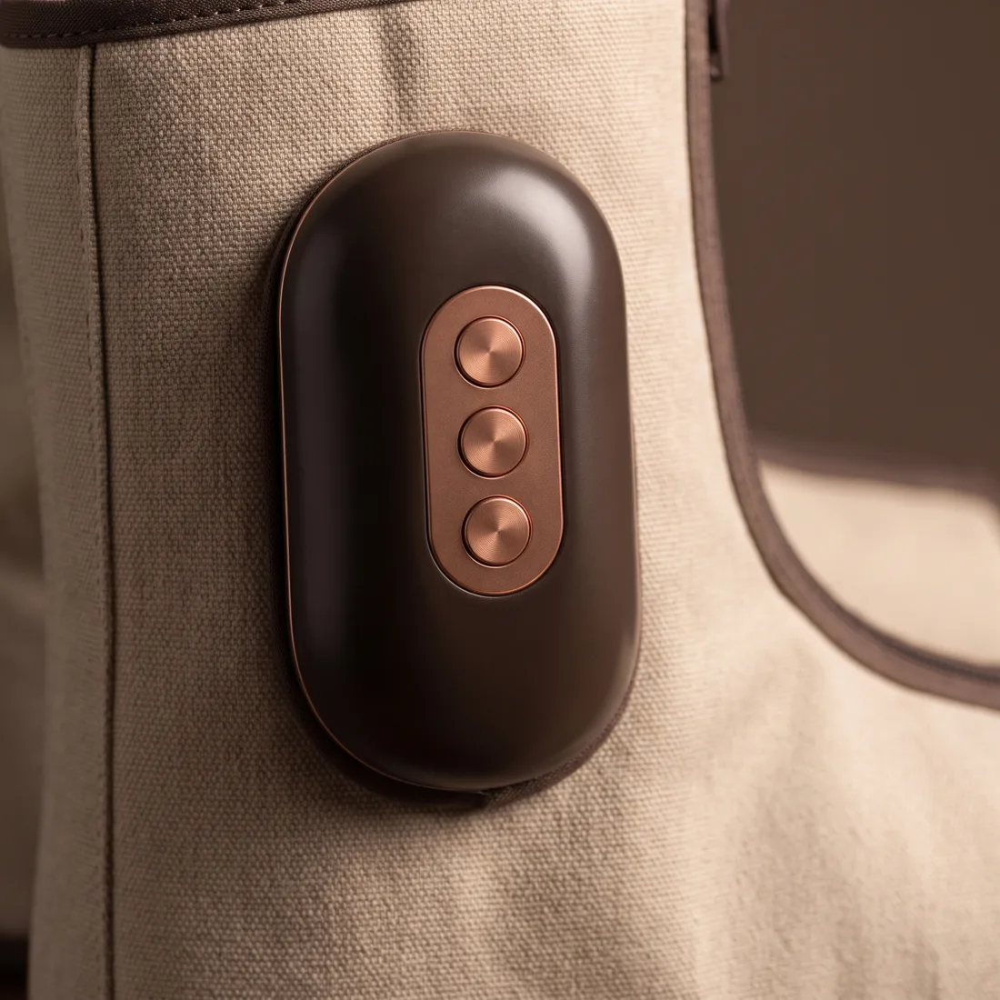
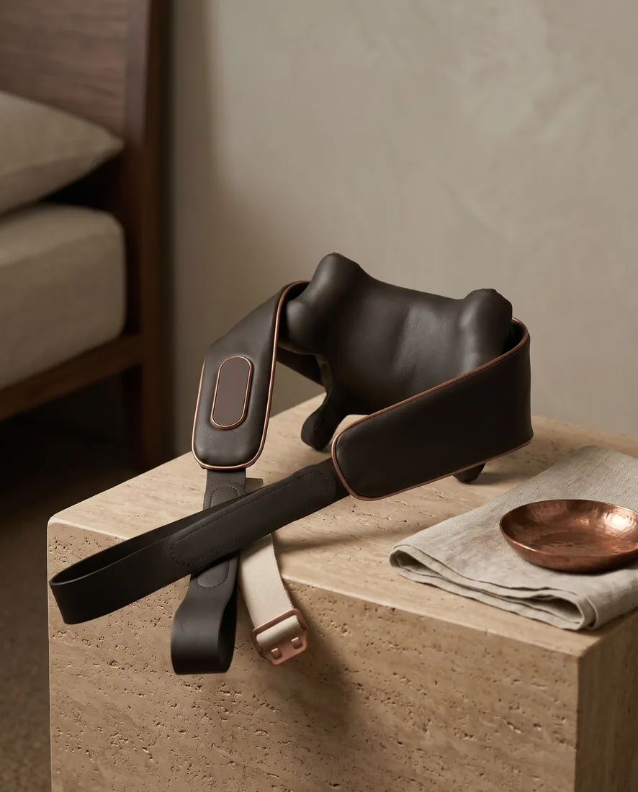
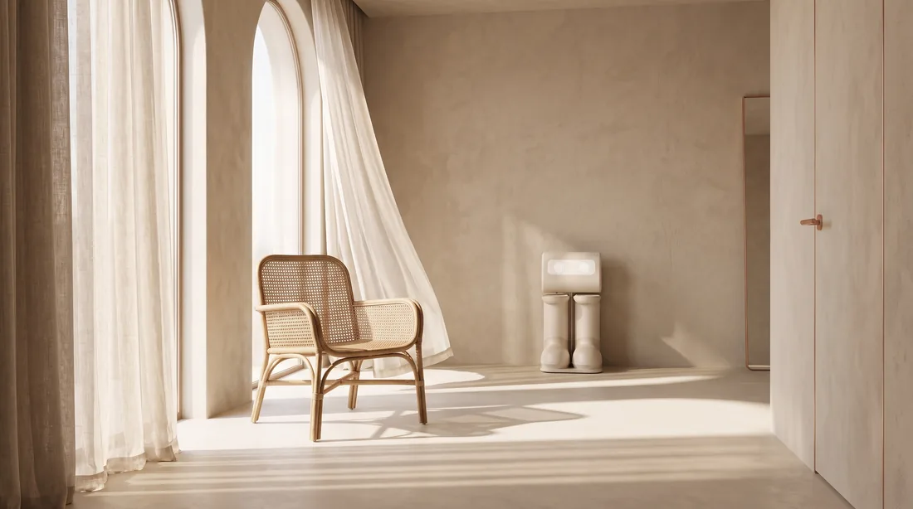
Good Night오늘 밤, 집이 쉼터가 됩니다.
abri